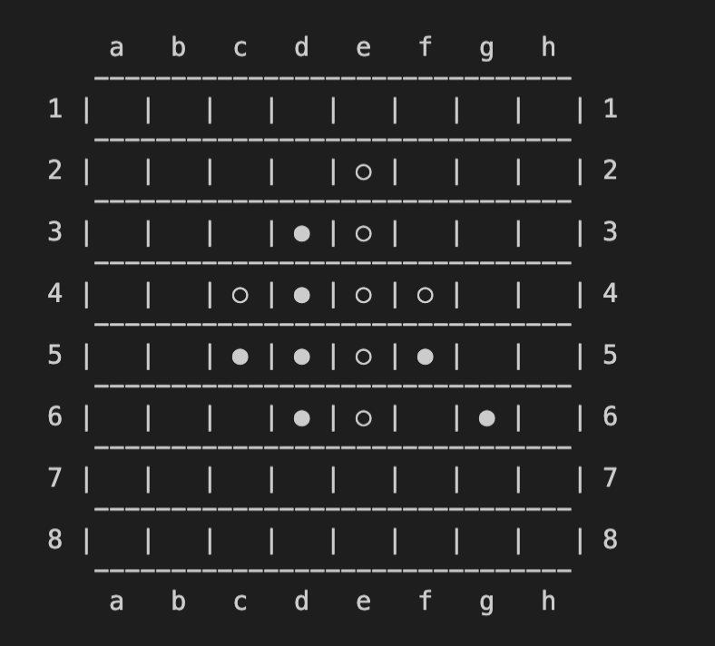
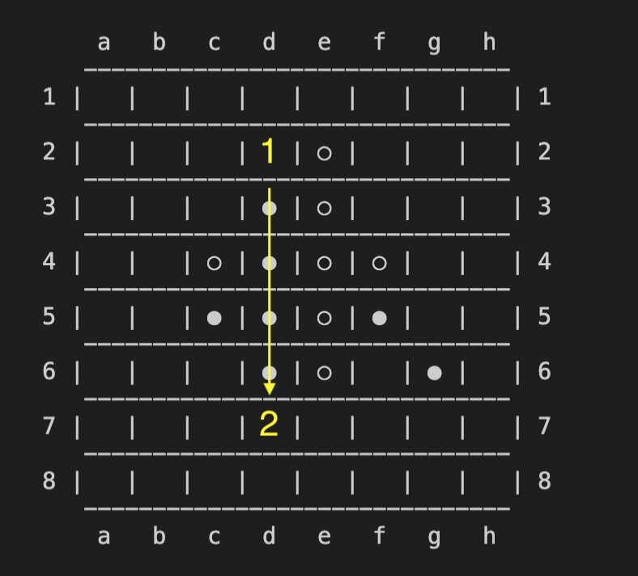
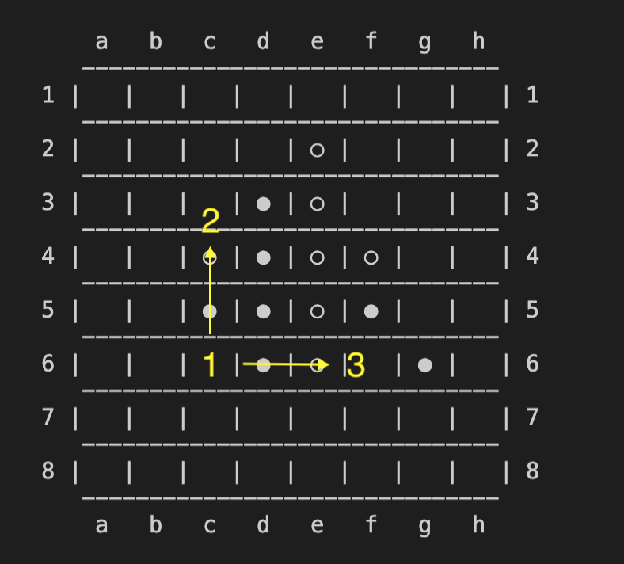
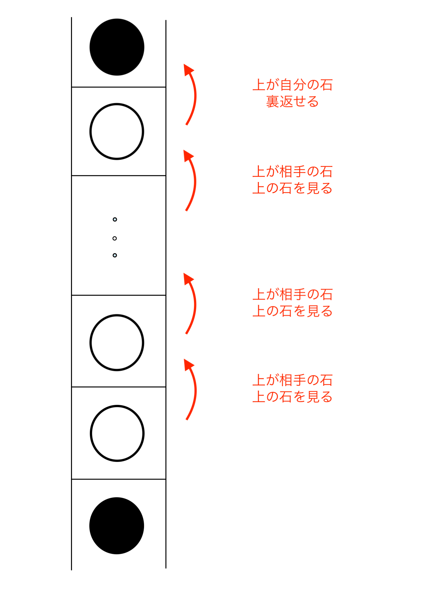
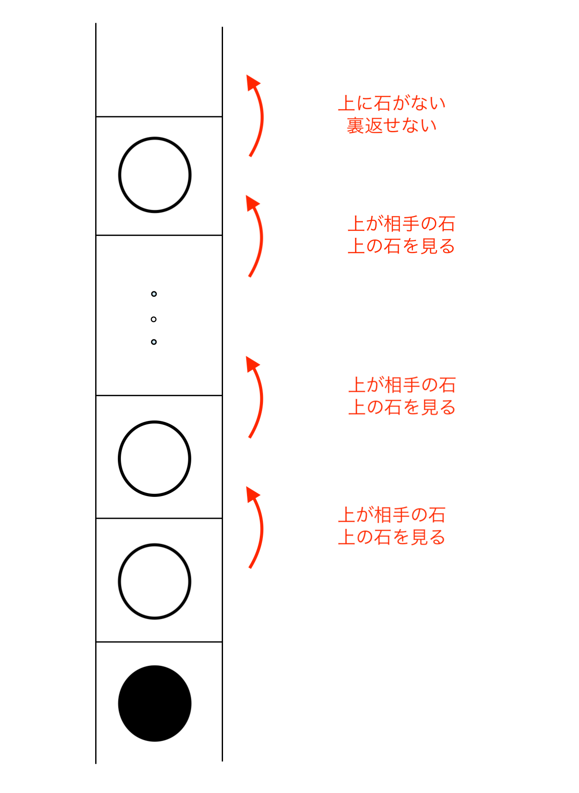
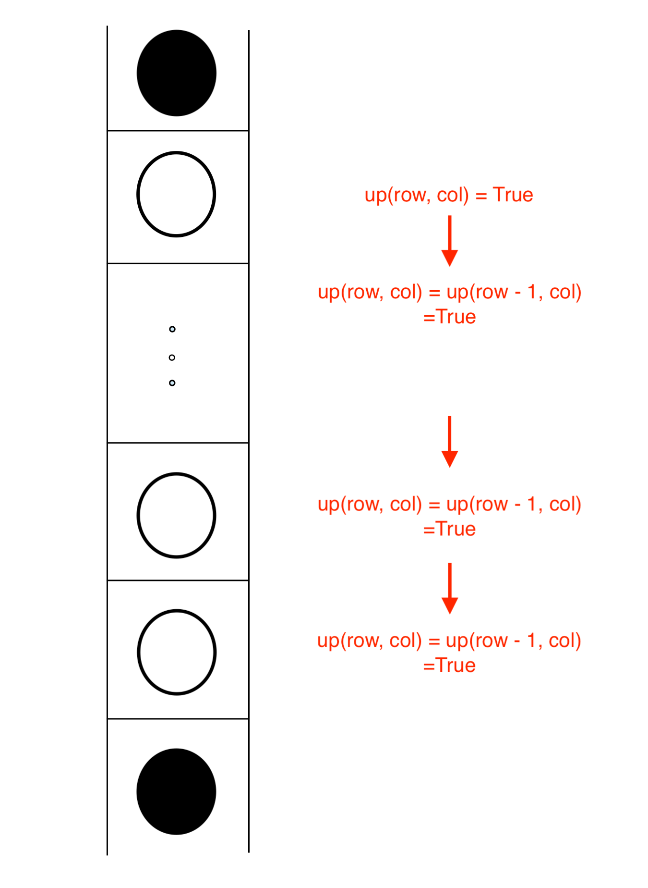

Stage 4 石をおけるか判別する機能を実装する
4-1 石をおけるか判別する機能をデザインする
今回からようやく石を裏返す機能の実装に入ります。

やっとリバーシらしくなってきたな
ではどうやって裏返しましょうか？

とりあえずコードを見てみましょうか。board.py ファイルの turnjudge と turn の両メソッドで取り扱っていきます。
def turnjudge(self, player, row, col, direction: list, logger=None):
logger = logger or self.logger
# out of the board
if not (InBoard(row) and InBoard(col)):
logger.debug('{}, {}\tOUT OF THE BOARD'.format(row, col))
return False
# BLACK, WHITE or EMPTY
piece = self.board[row][col]
# EMPTY
if piece == EMPTY:
logger.debug('{}, {}\tREACHED TO EMPTY'.format(row, col))
return False
# OWN
elif piece == player:
logger.debug('{}, {}\tREACHED TO OWN PIEE'.format(row, col))
return True
# OPPONENT'S
elif piece == -player:
return self.turnjudge(player, row + direction[ROW], col + direction[COL], direction, logger)
# ERROR
else:
logger.error('UNEXPECTED VALUE of PLAYER in putjudge')
return False
def turn(self, player, row, col, logger=None):
logger = logger or local_logger
# out of the board
if not (InBoard(row) and InBoard(col)):
logger.info('OUT OF THE BOARD')
return FAILED
# there is already a piece
if self.board[row][col] != EMPTY:
logger.info('THERE IS ALREADY A PIECE')
return FAILED
turned = False
# searching all the direction for available one
for direction in WHOLE_DIRECTION:
focused = [row + direction[ROW], col + direction[COL]]
if not (InBoard(focused[ROW]) and InBoard(focused[COL])):
continue
next_piece = self.board[focused[ROW]][focused[COL]]
logger.debug('direc = {}, next_piece = {}'.format(direction, next_piece))
# in case available
if next_piece == -player and self.turnjudge(player, focused[ROW], focused[COL], direction):
while self.board[focused[ROW]][focused[COL]] == -player:
self.board[focused[ROW]][focused[COL]] = player
focused[ROW] += direction[ROW]
focused[COL] += direction[COL]
turned = True
# in case a piece was turned
if turned:
self.board[row][col] = player
return SUCCEEDED
# in case any piece was not turned
else:
logger.info('THERE IS NO DIRECTION AVAILABLE')
return FAILED

なげーな、おい
まあ、リバーシの中核ですからね。このステージで扱うのは turnjudge メソッドだけですから、まだいいんじゃないですか？
~~~~~~~~~~~~~~~
さて、どうやったら「そのマスに石を置けるか」ということを判定する機能が作れるでしょうか？
さっぱりですか。では、みなさんが実際にリバーシをやるときに「このマスには石がおけるな」ということをどうやって判断しているか振り返ってみましょう。
まずこの盤面を見てみてください。
この盤面で d2 の位置に黒は石を置くことができるでしょうか？
できねーな
ではこの盤面で、c6 の位置に黒は石を置くことができるでしょうか？
それならできる
今どうやって「できる」「できない」を判断しましたか？
いや、どうやってって、なんつったらいいんかな、あれは
では質問を変えましょう。視線はどのように動かしましたか？
 こうやって動かしたんじゃないですか？
違うもん。そんなんじゃないもん
違うなら違うで構わないんですけれども、やってることとしては
- 石を置きたいマスに注目する
- 相手の石が隣接しているマスの方向をたどる
- どの方向を見ても相手の石の端に自分の石がなければおけない
- どれかしらの方向で相手の石の端に自分の石があればおける
って判断ですよね？これをコンピューターにやらせましょう。
~~~~~~~~~~~~~~~
では、「石をマスにおけるかおけないか」を判断するアルゴリズムを考えてやります。「どの方向を見ても」とか「どれかしらの方向で」といったものについては for ループとか使えばできますから、とりあえずここでは１つの方向について考えていきましょう。
例えば上だったら「上をみて裏返せる石があるか」を判定すればいいんやな
そういうことです。せっかくなので上の場合を考えてみましょうか。
石を [row, col] の位置に置きたいとします。まず最初に、[row, col] の１つ上のマスに相手の石がなければ当然裏返すことはできませんから、この時点で除外してあげましょう。
すぐ上に相手の石がある場合は、ひょっとしたら裏返すことができるかもしれません。さらに上のマスにも相手の石が続いていくか見てみます。
「さらに上のマスにも」っていうけどさ、
どうやって上のマス見んのさ
まあ while ループとか使えばいいのかもしれませんが、今回は処理がほとんどありません。ここは一つ再起関数でいきましょうか。
さいきかんすー？
アルゴリズムはだいたいこんな感じになります。
 例えば「置いたところから上に石を裏返せるか判断する関数」up(row, col) というものを考えてあげます。挙動としては
- [row, col] のマスに自分の石がある → return True
- [row, col] のマスに自分の石も相手の石もない → return False
- [row, col] のマスに相手の石がある → return up(row - 1, col)
としてあげます。リターンする値をとりあえずキープしているわけです。
こうすれば up(row, col) とするだけで上方向に石を裏返せるか確認できます。